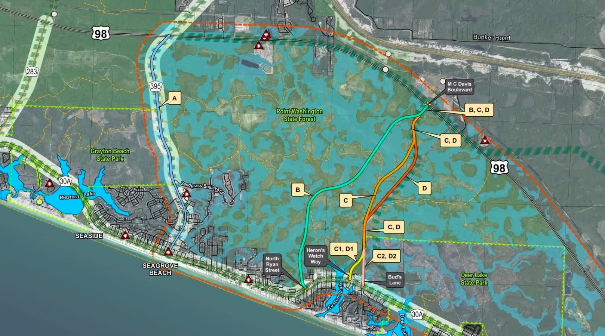
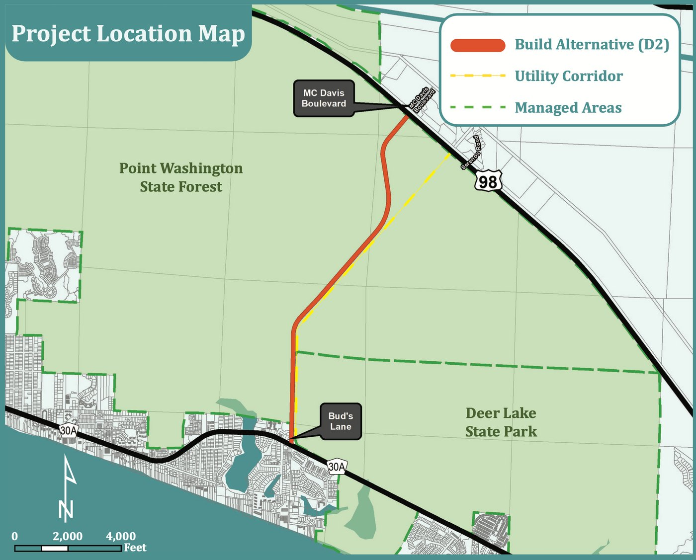

The South Walton Connector
Understanding the proposed connection between Scenic Highway 30A and US 98
South Walton Connector Road
Project Timeline
-
2006 — Genesis 30A Traffic Study
Walton County's Genesis 30A Traffic Study examined transportation conditions along the 30A corridor and included discussion of a potential north-south roadway between CR 395 and Watersound Parkway. County officials later cited this study when reconsidering the concept in 2015.
-
July 28, 2015 — County revisits connector concept
County staff discussed the 2006 Genesis 30A Traffic Study with the BCC, specifically a potential north-south roadway between CR 395 and Watersound Parkway. Commissioners requested updated traffic information before proceeding further.
-
2016 — Genesis 30A study updated
Walton County updated the earlier Genesis 30A transportation analysis as traffic concerns and development in South Walton continued to increase.
-
2017–2018 — Formal PD&E process pursued
Walton County moved toward a formal Project Development & Environment (PD&E) study to evaluate potential alternatives for improving north-south connectivity between CR 30A and US 98.
-
June 25, 2018 — Atkins selected for PD&E
The BCC awarded RFQ 018-027 for PD&E services for the South Walton Connector Road and authorized negotiations with Atkins Engineering. During the meeting, residents spoke both about environmental concerns and the transportation problems the study was intended to evaluate.
-
September 11, 2018 — $597,780 PD&E contract approved
The BCC adopted Resolution 2018-77 recognizing $597,780 in proportionate-fair-share funds for the project and approved the $597,780 Atkins contract for PD&E services for a South Walton Connector between CR 30A and US 98.
-
August 21, 2019 — Six alternatives presented to the public
Walton County held a public meeting presenting six build alternatives—A, B, C1, C2, D1 and D2—and comparing potential environmental, physical, social and economic impacts. The County described the project's primary purpose as improving connectivity between US 98 and CR 30A, with secondary goals including congestion relief, emergency response and evacuation, and multimodal transportation.
-
2020–2021 — PD&E process continues
The study continued through the COVID-era disruption while the South Walton Connector also remained part of regional transportation planning discussions.
-
December 9, 2021 — TPO considers significant public input
During development of the Okaloosa-Walton TPO's 2045 Long Range Transportation Plan, the TPO reported receiving 206 comments opposing and 130 supporting the South Walton North/South Connector. Citizens also spoke both for and against the project at the December 9 meeting. The project remained in the PD&E phase.
-
2022 — Project remains in regional transportation planning
The South Walton Connector continued to appear in regional transportation planning while Walton County's PD&E study remained underway.
-
March–April 2023 — Phase I PD&E reaches final stage
Walton County and Atkins presented the study history, transportation purpose and need, environmental considerations, alternatives, agency coordination and public involvement as Phase I approached completion.
-
April 18, 2023 — D2 presented as the preferred alternative
County materials identified Alternative D2 as the preferred alternative. The concept was a new north-south connection between CR 30A and US 98 using a two-lane rural roadway with 11-foot travel lanes and a 12-foot multi-use path within approximately 150 feet of right-of-way.
-
April 2023 — Phase I concludes; Phase II requires future funding
The County stated that Phase I would conclude at the end of April 2023. Phase II could begin when funding became available and would update project data, provide additional public involvement, continue agency coordination and mitigation work, and advance the project toward Location Design Concept Approval. Design and permitting would require additional future funding.
-
February 27, 2024 — $350,000 programmed for Phase II
The BCC adopted its FY2024–28 Five-Year Work Plan. Project #83, South Walton Connector Road PD&E Phase II, included $350,000 in FY2026 SWIF funding.
-
September 10, 2024 — Phase II funding remains in five-year plan
The adopted FY2025–29 Five-Year Work Plan again listed South Walton Connector Road PD&E Phase II, with $350,000 programmed for FY2026.
-
September 22, 2025 — Connector dropped from new five-year plan
Walton County adopted its FY2026–30 Five-Year Work Plan. The South Walton Connector and the previously programmed $350,000 Phase II allocation were no longer carried forward in the adopted plan. The County confirms that the FY2026–30 plan was adopted on September 22, 2025.
The Proposed Route
The 2023 County materials identified D2 as the preferred build alternative. The proposed concept was a two-lane roadway with 11-foot travel lanes and a 12-foot multi-use path within a 150-foot right-of-way.
